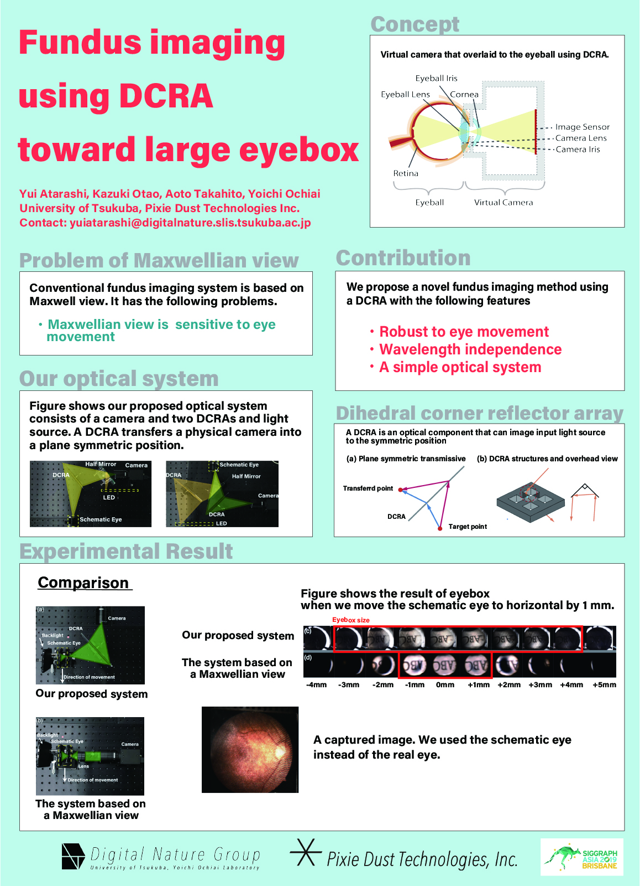

大学1年，2年次にデジタルネイチャー研究室の共同研究学生として行った研究になります．
二面角コーナーリフレクターアレイ（DCRA）を使用した新しい眼底撮影法を提案しました．
DCRAには，光源を面対称位置に結像させる機能があります．この機能を用いて，DCRAを使用して眼球内または眼球上に仮想カメラを生成し，眼底にある網膜を撮影します．
提案された方法では，目の動きに頑健な，波長非依存性を持つ簡易な光学系を実現します．
担当
実装・論文執筆
外部資料
デジタルネイチャー研究室 プロジェクトページ
コンピュータグラフィックス分野の国内会議であるSIGGRAPH Asiaにて主著のポスター論文の発表を行いました． ACM DL